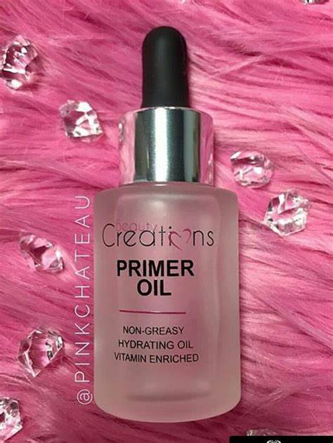

Somos una empresa creada por mujeres, actualmente enfocada en la venta y distribución de productos para el cuidado de la piel, cosméticos, joyería y papelería moderna. Ofreciendo orientación a nuestros clientes sobre los productos a utilizar con un mayor beneficio
Somos una tienda online innovadora que está ofreciendo productos y servicios de calidad al mejor precio, con reseña de los productos, realizando conciencia de lo importante que es el cuidado de la piel.
Posicionarnos en el mercado nacional como una marca preferida por los clientes, creando una tienda física con nuestra gama de productos, generando empleo, creando una comunidad amplia de consumidores.
¿Por qué es importante el cuidado de la piel? La piel es un órgano vital que nos protege de los rayos del sol, la contaminación, los gérmenes y otros elementos externos. Además, la piel es una de las primeras cosas que notamos en una persona y puede decir mucho sobre su salud y bienestar. Por lo tanto, es importante cuidar la piel para mantenerla saludable y evitar problemas como el acné, la sequedad, las arrugas, el envejecimiento prematuro y el cáncer de piel. Los tipos de piel Antes de comenzar cualquier régimen de cuidado de la piel, es importante comprender tu tipo de piel. Los tipos de piel más comunes son: Piel normal Este tipo de piel tiene un equilibrio perfecto entre la producción de aceite y la hidratación. La piel normal se ve suave y radiante, sin exceso de grasa ni sequedad. Piel grasa La piel grasa se caracteriza por la producción excesiva de aceite, lo que puede provocar acné y puntos negros. La piel grasa suele tener un aspecto brillante y grasoso. Piel seca La piel seca carece de hidratación y puede verse escamosa, áspera y con picazón. La piel seca puede ser causada por una variedad de factores, incluyendo la edad, el clima y la humedad. Piel sensible La piel sensible puede irritarse fácilmente y enrojecerse en respuesta a ciertos productos o factores ambientales. La piel sensible puede ser causada por una variedad de factores, como la genética, el clima y la exposición a productos químicos. Los pasos básicos del cuidado de la piel Independientemente de tu tipo de piel, existen algunos pasos básicos que puedes seguir para mantenerla saludable y radiante: Limpieza La limpieza es el primer paso para mantener la piel saludable. Limpia tu piel suavemente dos veces al día con un limpiador suave y sin alcohol. Exfoliación La exfoliación ayuda a eliminar las células muertas de la piel y a estimular la renovación celular. Exfolia tu piel suavemente una o dos veces por semana con un exfoliante suave. Hidratación La hidratación es fundamental para mantener la piel saludable y radiante. Usa una crema hidratante sin aceite para mantener tu piel hidratada. Protección solar La protección solar es esencial para prevenir el cáncer de piel y el envejecimiento prematuro. Usa un protector solar con un SPF de al menos 30 todos los días, incluso en días nublados. Los productos para el cuidado de la piel Hay una gran variedad de productos para el cuidado de la piel disponibles en el mercado, pero no todos son iguales. Al elegir productos para el cuidado de la piel, asegúrate de elegir aquellos que sean adecuados para tu tipo de piel y que no contengan ingredientes irritantes. Algunos de los productos más comunes para el cuidado de la piel incluyen: Loción limpiadora Una loción limpiadora suave ayuda a eliminar la suciedad y los residuos de la piel sin resecarla. Tónico Un tónico ayuda a equilibrar el pH de la piel después de la limpieza y a prepararla para la hidratación. Serum Los sueros son ricos en ingredientes activos y ayudan a tratar problemas específicos de la piel, como las arrugas y las manchas oscuras. Crema hidratante Una crema hidratante sin aceite ayuda a mantener la piel hidratada y suave. Protector solar Un protector solar ayuda a prevenir el daño solar y el envejecimiento prematuro. Las mejores prácticas para el cuidado de la piel Además de seguir los pasos básicos y elegir los productos adecuados, hay algunas prácticas que pueden ayudarte a mantener tu piel saludable y radiante: Bebe agua Beber agua ayuda a mantener la piel hidratada desde el interior. Cuida tu dieta Una dieta equilibrada y rica en nutrientes es esencial para mantener una piel saludable. Evita el exceso de sol El exceso de sol puede dañar la piel y causar envejecimiento prematuro y cáncer de piel. Usa un protector solar y evita la exposición directa al sol durante las horas pico. No fumes Fumar puede dañar la piel y causar arrugas y envejecimiento prematuro. Duerme lo suficiente Dormir lo suficiente es esencial para la salud y la belleza de la piel. Conclusión La piel es un órgano vital que merece nuestra atención y cuidado. Al seguir los pasos básicos del cuidado de la piel, elegir los productos adecuados y adoptar prácticas saludables, podemos mantener nuestra piel saludable y radiante. Recuerda que cada tipo de piel es diferente y es importante elegir productos y prácticas que sean adecuados para tu tipo de piel.
1- Primer
El primer (también conocido como prebase) es el paso número uno en una rutina de maquillaje. Ayuda a rellenar
los parches, las líneas finas y suavizar la textura de la piel antes de aplicar la base.
Muchas mujeres deciden no usar primer, sobre todo si usan una base de maquillaje en polvo, pero la prebase
sirve para dar uniformidad a la piel y para evitar que posteriormente el maquillaje se vea cuarteado.
Si quieres que tu maquillaje se mantenga a lo largo del día, una prebase funciona como por arte de magia. No
solo crea un lienzo suave e impecable, sino que también hace que la aplicación de la base sea mucho más fácil.
Además, si estás lidiando con problemas como poros dilatados o enrojecimiento, el primer los cubrirá,
brindando una piel suave y aterciopelada y minimizando la apariencia de los poros.

2- Base de maquillaje
Tu base es la clave para conseguir una piel con un aspecto impecable. También es lo más difícil de encontrar
cuando se trata de tu rutina de maquillaje. ¿Por qué? Porque debes considerar algunas cosas antes de ir a la
tienda a comprar una fórmula. Primero, ¿es esta la cobertura que deseas? Y en segundo lugar, ¿funcionará esto
para tu tipo de piel?
Lo más recomendable para principiantes es elegir una base de cobertura ligera a media, pues una de cobertura
completa se sentirá pesada en tu piel.
Si eres nueva en el uso de base, es importante probarla en la línea de la mandíbula antes de comprar. O
dirígete a tu tienda más cercana (Ulta o Sephora) y deja que un maquillador te ayude a elegir un tono que
combine con tu cutis y se adapte a tus necesidades de cobertura. También puedes solicitar una muestra si
deseas ver cómo funciona una fórmula para su piel antes de realizar su compra.
También puedes probar herramientas virtuales para elegir base de maquillaje. Marcas como L’Oréal, MAC y NYX
Cosmetics cuentan con probadores virtuales para ver cómo un producto se verá en tu piel antes de comprarlo.
como aplicar base de maquillaje
recomendamos
Tutoriales de maquillaje: cómo aplicar base correctamente para lucir la piel natural
3- Corrector
El corrector es uno de los elementos más esenciales en tu cosmetiquera. Es un básico, ya sea que desees cubrir
imperfecciones, enrojecimiento u ojeras, el corrector funciona a la perfección. Por lo general, es mejor
aplicar el corrector después de la base porque si lo hace al revés, terminarás manchándolo.
Puedes elegir entre un corrector líquido, en crema o en barra según la cobertura que desees. Mira algunas
opciones de correctores y cómo aplicarlos.
4- Blush
Cuando el rubor se aplica correctamente, puede realzar instantáneamente tu rostro y darte ese brillo hermoso y
juvenil. Lo mejor es elegir un color que complemente tu tono de piel. Un color que es demasiado brillante para
tu tono de piel se verá fuerte y muy falso. Elige un tono que agregue sutilmente color a tu rostro y esculpa
tus mejillas.
Si eres principiante, es una buena idea comenzar con un rubor en polvo. Los tonos coral, rosa claro o
melocotón funcionan bien en tonos de piel claros a medios; y los tonos ciruela, rosa y más profundos funcionan
bien en pieles oscuras.
maquillaje principiantes
Poco a poco irás aprendiendo sobre fórmulas y cobertura.
El bronzer y el iluminador también realzan las facciones y dan un brillo especial al rostro, puedes ir
incorporándolos poco a poco.
5- Paleta de sombras en tonos neutros/pasteles
Cuando se trata de maquillarte los ojos, todo lo que necesitas es una paleta de sombras de ojos nude. Esta
paleta es esencial para que un principiante practique la técnica de aplicación de sombras de ojos.
Lo que más nos gusta de una paleta de sombras de ojos nude es cómo se compone de todos los colores que
necesitarás para crear un look de maquillaje perfecto. Es increíblemente versátil y nunca puede pasar de moda.
puedes guairte por tutoriales de maquillaje
6- Rímel
Una máscara de pestañas puede transformar tus ojos y aumentar instantáneamente las pestañas con más volumen,
definición y longitud. Es la única herramienta de maquillaje que te hará abrir instantáneamente los ojos por
la mañana (incluso si no has dormido las 8 horas completas).
7- Lápiz de cejas
Tus cejas son otras de las características más importantes de tu rostro: dales forma, rellena y define con un
lápiz lápiz de cejas en crema o simplemente cepíllalas y dómalas con una máscara de pestañas transparente, que
también funciona como gel para cejas.
 8- Lipstick
Dependiendo de tu estilo y preferencias, los tonos de labiales que utilices variarán. Un buen tono de lápiz
labial no solo puede ayudar a iluminar tu rostro, sino también evita que luzcas “sin color”. Y cuando se trata
de color de labios, las opciones son infinitas. Si eres completamente nueva en el lápiz labial, te sugerimos
comenzar con tonos menos pigmentados y pasar gradualmente a tonos más atrevidos.
Extra: Brochas de maquillaje
El resultado de tu maquillaje depende mucho de las brochas que uses. Como principiante, no necesitas ni
quieres una docena de pinceles en tu bolsa de maquillaje. Solo necesitas algunos pinceles básicos que sean
perfectos para empezar. Muchos productos de maquillaje se pueden aplicar con los dedos, pero las brochas
ayudan a difuminar mejor.
8- Lipstick
Dependiendo de tu estilo y preferencias, los tonos de labiales que utilices variarán. Un buen tono de lápiz
labial no solo puede ayudar a iluminar tu rostro, sino también evita que luzcas “sin color”. Y cuando se trata
de color de labios, las opciones son infinitas. Si eres completamente nueva en el lápiz labial, te sugerimos
comenzar con tonos menos pigmentados y pasar gradualmente a tonos más atrevidos.
Extra: Brochas de maquillaje
El resultado de tu maquillaje depende mucho de las brochas que uses. Como principiante, no necesitas ni
quieres una docena de pinceles en tu bolsa de maquillaje. Solo necesitas algunos pinceles básicos que sean
perfectos para empezar. Muchos productos de maquillaje se pueden aplicar con los dedos, pero las brochas
ayudan a difuminar mejor.